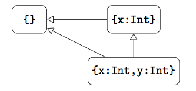
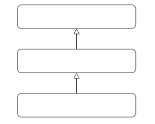
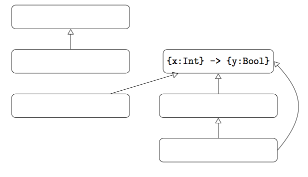

Good Luck!
0 + 3 or 2 + 0 the circuit board would melt (it would still add any non-0 numbers). He also broke subtraction but we are only focusing on addition in this problem. Joeys bosses didn't find out his trickery until the compiler was burned into ROM and the telescope was already in orbit and about to be powered up. Fortunately no code had been uploaded to it for compiling and running yet.
+ operation Joey implemented.
patchedPlus = Function x -> Function y -> ... (fill in the dots) so that the programmers can still write their code as long as they use patchedPlus in place of the built-in +. You need to still use the built-in integers, any Church encoding or the like will be too slow for the telescope to function. Remember that your encoding needs to guarantee that the circuit board will never melt.
option type. Example FbOpt code could be:
(Fun f -> f None + f Some(3)) (Fun x -> Match x With Some(y) -> y + 1 | None -> 0)
Note this would easily be encoded with variants, but the main goal for this question is to make a primitive notion of "potentially present data". So FbOpt extends Fb with expressions None, Some(e), and Match e With Some(x) -> e | None -> e.
t Option which is analogous to OCaml's t option type. For clarity we illustrate by making a typed version of the above example:
(Fun f : (Int Option -> Int) -> f None + f Some(3)) (Fun x : Int Option -> Match x With Some(y) -> y + 1 | None -> 0)Write out the (new) type rules needed for TFbOpt beyond the rules already present in TFb.
Match syntax to also require a type be declared on the parameter to some, i.e. why didn't we make the modified TFbOpt syntax be Match e With Some(x:t) -> e | None -> e, adding a type declaration on the x? Since both are variable definitions and not uses the first reaction might be to require such an explicit type declaration. Explain why no additional type declaration is required.
point object in FbSR that is in the book:
Let point = { x = Ref 4; y = Ref 3;
magnitude = Function this -> Function dummy -> !(this.x) + !(this.y);
iszero = Function this -> Function dummy -> (this.magnitude this {}) = 0;
setx = Function this -> Function newx -> this.x := newx;
sety = Function this -> Function newy -> this.y := newy } In
point.magnitude point {}
point.magnitude {} to send a magnitude message -- we need to explicitly pass the self every time, cluttering the syntax. Provide an alternative encoding of this point object which has all the functionality but for which point.magnitude {} (and similarly for the other methods) is going to give the right answer, 7 here.
x and y: make them behave like private fields in Java. Make sure the internal access to the fields still works.
{}, {x:Int}, and {x:Int,y:Int}, we can draw the following graph:

This graph expresses three statements: {x:Int} <: {}, {x:Int,y:Int} <: {x:Int}, and {x:Int,y:Int} <: {}.
These statements are all true and they are the only three subtyping statements which can be made about these types. In this way, the above graph is exhaustive: it shows every subtyping relationship between the nodes.
{}
{y:Bool}
{x:Int, f:{} -> Bool}
{x:Int, f:{z:Int} -> Bool}
{x:Int} -> {}
{} -> {x:Int}
{} -> {}

Is it possible for the above graph to be an exhaustive subtyping graph? If so, fill in the nodes with types to create an example. If not, explain why this is not possible.

C to "get the exam points out" of the expression we give you. Your context C cannot contain any integer literals 0,1,-1,2,.. or any integer operations +/-. Concretely, for each expression e below make a C such that C[e] ==> n where n is the number of points you will get on that sub-question. You need to give the whole exact context C, no "..." or approximate stuff! Note the max is 4 and any number greater than 4 is a "TILT" and is worth 0 points, beware! We will also give partial credit for close answers.
f o o d 4 t h o t (each letter is a variable, space is function application as usual)
q 100,000 (Function x -> x-1) (Function x -> x=0) (Function x -> .. (repeat Function x -> .. 99,999 times) .. -> 3)
g 0 (Function s -> If s = 1 Then (t 3) Else 0) (Function q -> Function r -> (r (If q = 0 Then 1 Else q)))
(Function f -> f 1 (Function z -> Function z -> 2) (Function a -> a a (Function n -> Function m -> n - m)))